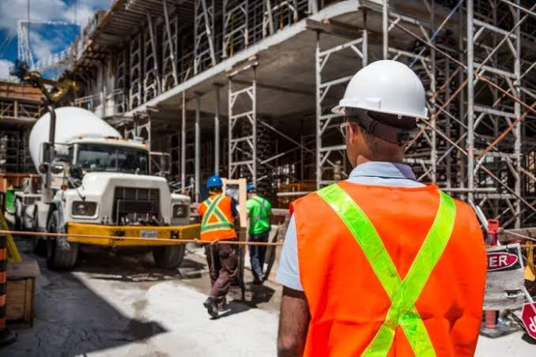

O Direito e um conjunto de leis e normas que organiza a sociedade e orienta as relaçôes entre empresas, trabalhadores, consumidores e o Estado.Para o engenheiro de produção, è essencial conhecer.
Direito do Trabalho: direito e deveres de empregados e empregadores, jornadas de trabalho, salários, segurança e saúde ocupacional(CLT e normas regulamentadoras-NRs).
Direito Empresarial: regras de funcionamento das empresas, contratos comerciais, obrigações e responsabilidades.
Direito do Consumidor: garantia de produtos e serviços, qulidade e responsabilidade por danos ao consumidor(Código de Defesa do Consumidor - CDC).
Direito Civil: contratos, indenizações e responsabilidade por prejuizo causado a terceiros.
Direito Ambietal: cumprimento das leis ambientais,descarta correto de resíduos e uso sustentável dos recursos naturais.
Ètica e responsabilidade profissional: agir com honestidade, priorizar a segurança, respeitar normas técnicas e conhecer as responsabilidades previstas no sistema CONFEA/CREA, incluindo a ART quando aplicável.
O engenheiro de produção precisa conhecer as leis que afetam os processos produtivos,os trabalhadores e o meio ambiente,garantindo eficiência,segurança,qualidade e conformidade legal.Não basta produzir mais e gastar menos: é necessário fazer tudo dentro da lei e com responsabilidade social e profissional.
